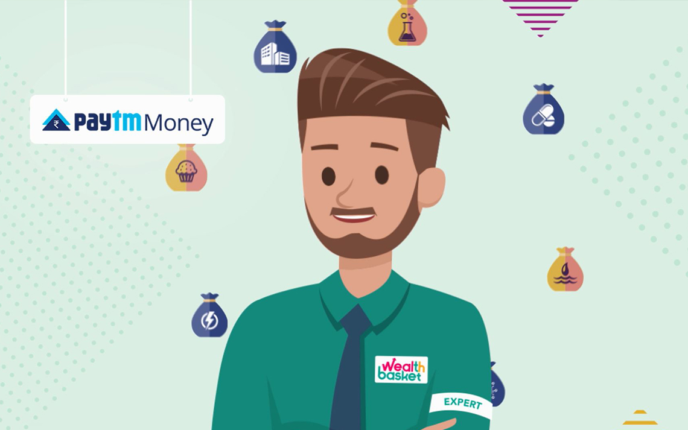

What is a Wealthbasket?
WealthBasket is a basket of Equities, or ETFs, that helps you build low-cost diversified, long-term as well as short term portfolios. Each WealthBasket reflects an investment strategy, theme or an idea with underlying stocks, ETFs accordingly weighted following a rigorous research process.
01 — PROJECT SCOPING
Identifying the business- critical moments
Before starting the project, my agency mapped a long list of relevant user journeys through a thorough ethnographic study. Based on this study, I needed to start this project by identifying the essential journeys that would provide maximum impact for their business.
To do this, the UX agency I worked at, kicked off the project with a three-day scoping workshop at clients offices in Mumbai. The goal of the challenge was to narrow in on the specific scope and start knowledge sharing, define the success criteria of the project, and align on guiding principles for the concepts. And I got to test their current platform to get a better understanding of the user experience of basket trading.
After the sessions, my team and I analyzed the workshop's discussions,outcomes and provided the client with an overview of potential work packages and a recommendation for the scope and focus of the project:
02 — USER JOURNEYS
Designing for first-time and everyday use
Based on the contextual enquiries, I uncovered a dilemma in designing for novel users (who need to feel more in control, need more transparency to feel trust), and eventually everyday users (who want convenience and ease-of-use).
To ensure I created solutions appropriate for both user types, I created user journeys for each. In the user journeys, I mapped a realistic scenario with the necessary interactions and car responses. This helped us frame the crucial interaction moments to dive into in the actual interaction design work.
03 — PLANNING PUR SPRINTS
The bare minimum
Building the bare minimum was the first thing. I planned a Asana board very intuitionally for this:
Task – Every task planned for the week came under this.
Active Sprint – Contained tasks being worked on for the day.
Sprint Backlog – Backlogs from the previous sprint.
Done – Tasks that were completed.
04 — FUNCTIONAL DESIGN
Low Fidelity Wireframes
I created semi-low fidelity wireframes to propose new product design changes and layouts based on initial user research and user needs. The wireframes helped me better assess what functionalities, layout, and components were working and what wasn't working based on user and team feedback. From there, I continued working on iterating the wireframe throughout the year based on new features, feedback, and changes proposed by the CEO.

05 — ONBOARDING
Wireframes to Visual Design
First thing was to design our main user flow - The onboaording. Once I had one in place, I discussed it with our back-end developers as well to know their opinions. Below is an image of what it looked like.
Onboarding flow
To generate concepts, I sketched and prototyped on a series of ideas. I then improved on these through internal crit session, user testing, and technical validation. I adjusted the concepts to propose feasible solutions that would integrate well into the existing IT platforms.
Onboarding flow
Onboarding flow
06 — CONCLUSION
Lot to Learn
I had a great time doing this. As an early enthusiast, this was a great opportunity to do things first hand. I wasn't able to monitor or test any of my designs because the scale of the project and the interest of the stakeholder were nowhere aligned, still grateful to do this job.

The client taught me a couple of things about the high and low investment cultures I followed them to contemplate investing in the way how I approached fintech products. There were a couple of things I could have done right when it comes to process if I had the same knowledge as I have now. But I guess that’s what learning is about.
Disclamer: Due to the confidential nature of the work, I am not able to share complete thorough detailed information. My role in the project was to frame the long-term vision for the product along with the research and ensure high-quality design outcomes. In case you want to know more, feel free to connect or lets get on a zoom call.